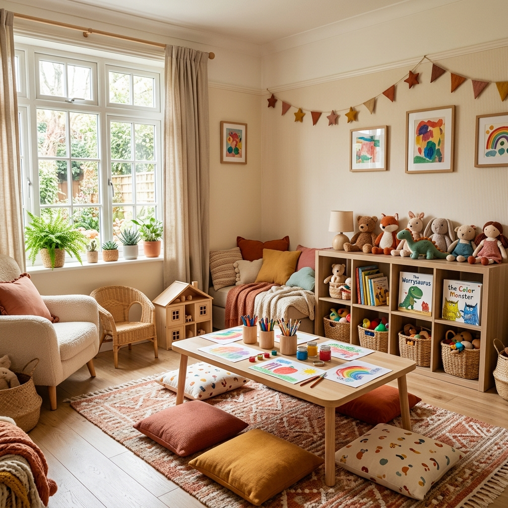

מרחב שקט — לעיבוד, להבנה, ולשינוי
טיפול רגשי קלאסי, עמוק ואישי. לכל מי שמרגיש שמשהו כבד מדי להכיל לבד — גם אם קשה להגדיר מה.
מה זה טיפול רגשי למבוגרים?
טיפול רגשי הוא מרחב שבו אפשר להביא את מה שמרגיש כבד, מבלבל, או כואב — ולעבד אותו עם מישהי שיודעת להקשיב ולראות.
זה לא "לדבר על הבעיות". זה לחקור ביחד את מה שמניע אתכם — מה גורם לכם לחזור אל אותם דפוסים, מה מחזיק אתכם במקומות שלא משרתים אתכם, ומה אפשר לשנות.
הטיפול מבוסס על קשר. לא על פרוטוקול, לא על שיטה נוקשה — על שיחה אמיתית, בין שתי בני אדם.

לא צריך להיות "בשבר" כדי לפנות
אנשים פונים לטיפול ממגוון סיבות — כולן תקפות, כולן ראויות.
כשהדאגות לא נרגעות, הגוף מגיב, קשה להירדם — הטיפול מחפש את מה שמתחת.
גירושים, פרידה, אובדן קרוב, שינוי חד בחיים — ליווי מקצועי בתקופות הכי קשות.
"שוב אני עושה את אותו הדבר" — הטיפול עוזר לזהות ולשנות דפוסים עמוקים.
בזוגיות, בהורות, בעבודה — לעבוד על יחסים מתחיל מלעבוד על עצמנו.
גם בלי משבר — בחירה להכיר את עצמכם טוב יותר ולחיות חיים עמוקים יותר.
טיפול מלא ועמוק מכל מקום בארץ — בגמישות ובנוחות שלכם.
איך נראה טיפול רגשי בפועל?
"הטיפול לא נותן לכם תשובות — הוא עוזר לכם למצוא את שלכם"
— גיל סיטון